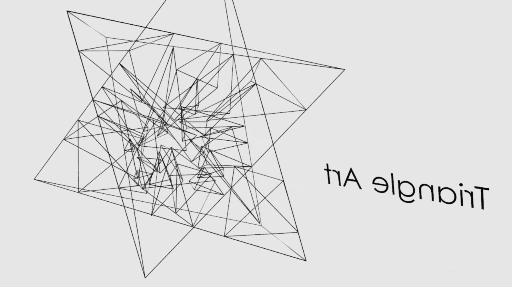

Triangle Atr
-
2018
Houdini : 6h
”幾何学的模様”とはなにか？ ”アート” とはなにか？
という疑問に対して, 自分の想像上だけで制作してみました. 制作自体は三次元空間上で行っていますが, 見た時には二次元の平面上にみえることが特徴です.
また, よく見ると, 辺と頂点同士が, 重なりあっています. シンプルではありますが, 細かいところまでこだわっている作品です.
